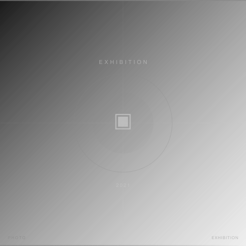

2021年秋、YukaiHands Galleryへのグループ展出展。フリーランスカメラマンとしての独立後初期の写真展参加。ポートレートを中心とした展示で、クリエイターとしての対外的な露出を広げた節目となった企画。
担当：展示作品制作・スチール撮影
Leica SL2
- Photographer
- 森川亮太 (M.RYOHTA / @m_ichirinka)
- Gallery
- YukaiHands Gallery

2021年秋、YukaiHands Galleryへのグループ展出展。フリーランスカメラマンとしての独立後初期の写真展参加。ポートレートを中心とした展示で、クリエイターとしての対外的な露出を広げた節目となった企画。
担当：展示作品制作・スチール撮影
Leica SL2